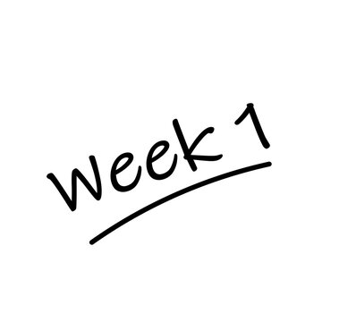
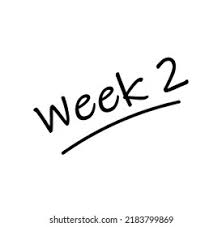
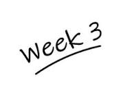
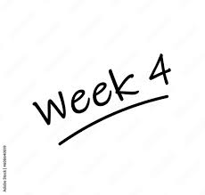
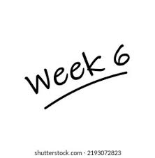
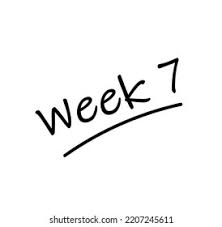
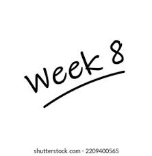
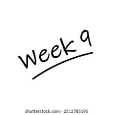
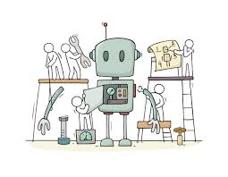

PS70 · Intro to Digital Fabrication
I build things. Mostly electronics, with the occasional vehicle thrown in. So far that's included an electric dirtbike I put together from scratch, a few FPV drones, and a leg brace that turns walking into electricity. This site is everything I made during PS70.
See the work ↓Selected Work
Each card opens a full writeup with photos, code, and the failures along the way.

Drone, knee-brace generator, or obstacle-detecting headset. One of them had to win.
Open →
Wooden enclosure off the laser cutter, then an iPhone and MagSafe modeled in Fusion 360.
Open →
A motor, a wavy cam, and binder clips moving in a wave across a wooden frame.
Open →
Sixteen LEDs and a potentiometer that morph a smiley into a frown.
Open →3D-printed thigh mount holding a DC motor and gearbox, wired to prove the concept.
Open →
A foam-and-copper pressure pad, plus a photoresistor that triggers an LED when the room goes dark.
Open →
Bridge rectifier fixed the polarity problem, a Hall sensor counts steps, and an OLED shows steps, calories, and live voltage.
Open →
Fidget spinners on the CNC, cast into chocolate molds, plus vacuum-formed Lego ice trays.
Open →
An ESP32-C3 on Wi-Fi, switched on and off through iOS Shortcuts by voice.
Open →
Four of us built a machine that draws designs in pancake batter.
Open →A leg brace that turns walking into usable electricity, with full rectifier circuitry and a 3D-printed calf mount.
Open →About
I'm Kamron. I spend most of my time on electronics, math, and figuring out how to build things that probably should not be built in a garage. I've put together an electric dirtbike from scratch and a handful of FPV drones, and I ride the ones that survive.
What I care about long-term is hardware that makes clean energy more practical, cuts down on pollution, or just helps people. That's the reason the final project for this class is a wearable that turns walking into electricity, instead of something easier.
When I'm not in the shop I'm usually with my baby brother.